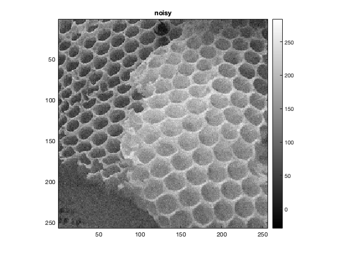

Contents
MyMainScript (Please zoom out in browser to view images side by side)
myNumOfColors = 200;
myColorScale = [ [0:1/(myNumOfColors-1):1]',[0:1/(myNumOfColors-1):1]' , [0:1/(myNumOfColors-1):1]' ];
tic;
Barbara.mat
im = load("../data/barbara.mat");
im = im.imageOrig;
im=double(im);
sd=(0.05)*(max(im,[],'all')-min(im,[],'all'));
rng(180050023);
im_noise=im+sd*randn(size(im,1),size(im,2));
[fi,mask] = myBilateralFiltering(im_noise,1.5,10,9);
[fi1,mask] = myBilateralFiltering(im_noise,1.5*0.9,10,9);
[fi2,mask] = myBilateralFiltering(im_noise,1.5*1.1,10,9);
[fi3,mask] = myBilateralFiltering(im_noise,1.5,10*0.9,9);
[fi4,mask] = myBilateralFiltering(im_noise,1.5,10*1.1,9);
bar = RMSD(im,fi);
disp("Input : Barbara.mat (window size 9)");
disp("Optimal Sigma spacial,intensity for lowest RMSD: 1.5 , 10");
disp("RMSD 1,1 : "+bar);
disp("RMSD 0.9,1 : "+RMSD(im,fi1));
disp("RMSD 1.1,1 : "+RMSD(im,fi2));
disp("RMSD 1,0.9 : "+RMSD(im,fi3));
disp("RMSD 1,1.1 : "+RMSD(im,fi4));
figure;
imagesc(im), title("Original"),colormap(myColorScale),daspect ([1 1 1]); axis tight; colorbar;
figure;
imagesc(im_noise), title("noisy"),colormap(myColorScale),daspect ([1 1 1]); axis tight; colorbar;
figure;
imagesc(fi), title("filtered"),colormap(myColorScale),daspect ([1 1 1]); axis tight; colorbar;
figure;
imagesc(mask), title("Mask"),colormap(myColorScale),daspect ([1 1 1]); axis tight; colorbar;
Input : Barbara.mat (window size 9)
Optimal Sigma spacial,intensity for lowest RMSD: 1.5 , 10
RMSD 1,1 : 3.2819
RMSD 0.9,1 : 3.2831
RMSD 1.1,1 : 3.2869
RMSD 1,0.9 : 3.299
RMSD 1,1.1 : 3.3029
Grass.png
im = imread("../data/grass.png");
im=double(im);
sd=(0.05)*(max(im,[],'all')-min(im,[],'all'));
rng(180050023);
im_noise=im+sd*randn(size(im,1),size(im,2));
[fi,mask] = myBilateralFiltering(im_noise,0.85,40,9);
[fi1,mask] = myBilateralFiltering(im_noise,0.85*0.9,40,9);
[fi2,mask] = myBilateralFiltering(im_noise,0.85*1.1,40,9);
[fi3,mask] = myBilateralFiltering(im_noise,0.85,40*0.9,9);
[fi4,mask] = myBilateralFiltering(im_noise,0.85,40*1.1,9);
bar = RMSD(im,fi);
disp("Input : Grass.png (window size 9)");
disp("Optimal Sigma spacial,intensity for lowest RMSD: 0.85 , 40");
disp("RMSD 1,1 : "+bar);
disp("RMSD 0.9,1 : "+RMSD(im,fi1));
disp("RMSD 1.1,1 : "+RMSD(im,fi2));
disp("RMSD 1,0.9 : "+RMSD(im,fi3));
disp("RMSD 1,1.1 : "+RMSD(im,fi4));
figure;
imagesc(im), title("Original"),colormap(myColorScale),daspect ([1 1 1]); axis tight; colorbar;
figure;
imagesc(im_noise), title("noisy"),colormap(myColorScale),daspect ([1 1 1]); axis tight; colorbar;
figure;
imagesc(fi), title("filtered"),colormap(myColorScale),daspect ([1 1 1]); axis tight; colorbar;
figure;
imagesc(mask), title("Mask"),colormap(myColorScale),daspect ([1 1 1]); axis tight; colorbar;
Input : Grass.png (window size 9)
Optimal Sigma spacial,intensity for lowest RMSD: 0.85 , 40
RMSD 1,1 : 7.3875
RMSD 0.9,1 : 7.4032
RMSD 1.1,1 : 7.4641
RMSD 1,0.9 : 7.4102
RMSD 1,1.1 : 7.4072
honeyCombReal.png
im = imread("../data/honeyCombReal.png");
im=double(im);
sd=(0.05)*(max(im,[],'all')-min(im,[],'all'));
rng(180050023);
im_noise=im+sd*randn(size(im,1),size(im,2));
[fi,mask] = myBilateralFiltering(im_noise,1.0,38,9);
[fi1,mask] = myBilateralFiltering(im_noise,1.0*0.9,38,9);
[fi2,mask] = myBilateralFiltering(im_noise,1.0*1.1,38,9);
[fi3,mask] = myBilateralFiltering(im_noise,1.0,38*0.9,9);
[fi4,mask] = myBilateralFiltering(im_noise,1.0,38*1.1,9);
bar = RMSD(im,fi);
disp("Input : honeyCombReal.png (window size 9)");
disp("Optimal Sigma spacial,intensity for lowest RMSD: 1.0 , 38");
disp("RMSD 1,1 : "+bar);
disp("RMSD 0.9,1 : "+RMSD(im,fi1));
disp("RMSD 1.1,1 : "+RMSD(im,fi2));
disp("RMSD 1,0.9 : "+RMSD(im,fi3));
disp("RMSD 1,1.1 : "+RMSD(im,fi4));
figure;
imagesc(im), title("Original"),colormap(myColorScale),daspect ([1 1 1]); axis tight; colorbar;
figure;
imagesc(im_noise), title("noisy"),colormap(myColorScale),daspect ([1 1 1]); axis tight; colorbar;
figure;
imagesc(fi), title("filtered"),colormap(myColorScale),daspect ([1 1 1]); axis tight; colorbar;
figure;
imagesc(mask), title("Mask"),colormap(myColorScale),daspect ([1 1 1]); axis tight; colorbar;
toc;
Input : honeyCombReal.png (window size 9)
Optimal Sigma spacial,intensity for lowest RMSD: 1.0 , 38
RMSD 1,1 : 7.2806
RMSD 0.9,1 : 7.2937
RMSD 1.1,1 : 7.3376
RMSD 1,0.9 : 7.3083
RMSD 1,1.1 : 7.3135
Elapsed time is 21.825168 seconds.
